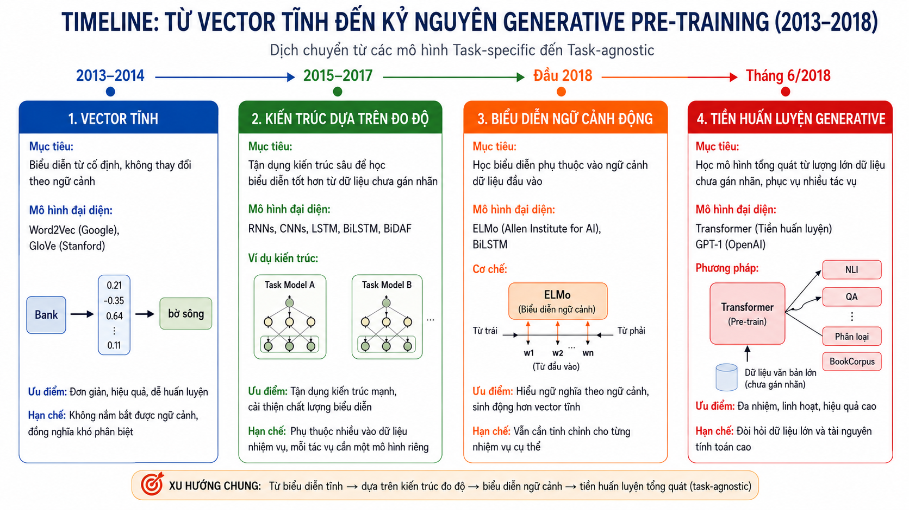
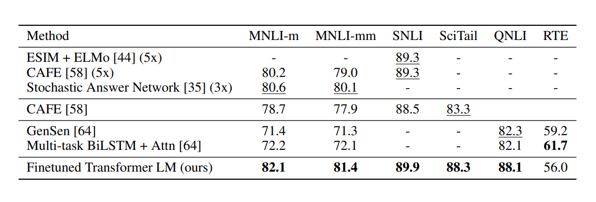
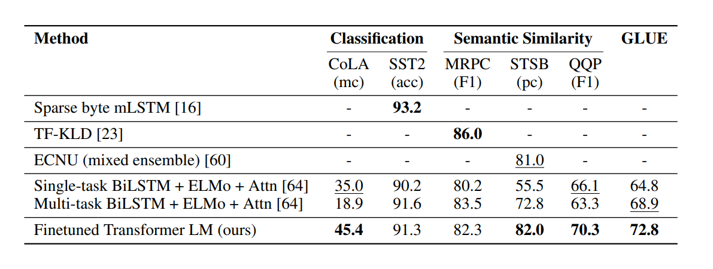
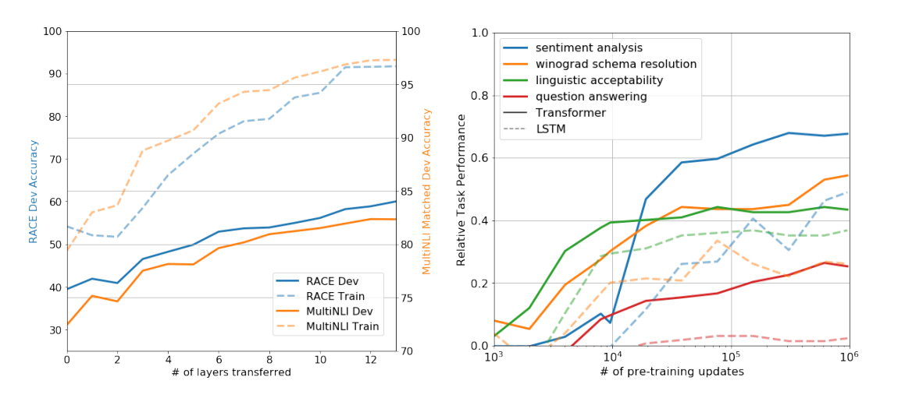

Nội dung chính
và bước chuyển dịch sang pre-train & fine-tune.
Tư Duy Task-Specific Thống Trị Ngành NLP
1. Chuyên biệt hoá
Mỗi tác vụ (phân loại, QA, dịch, NER…) cần kiến trúc và dữ liệu nhãn riêng.
2. Không tái sử dụng
Mô hình phân loại văn bản gần như vô dụng cho trả lời câu hỏi hay suy luận.
3. Rào cản mở rộng
Thiếu cơ chế hiểu ngôn ngữ tổng quát buộc người làm phải thiết kế lại từ đầu cho mỗi bài toán mới.
Hai Giai Đoạn: Pre-Training & Fine-Tuning
(không có nhãn)
không giám sát
đã học cấu trúc ngôn ngữ
có giám sát
NLI, QA, phân loại…

Tác Động Thực Tiễn Của GPT-1
Tối giản kiến trúc
- Một kiến trúc duy nhất (Transformer Decoder) phục vụ nhiều tác vụ.
- Thay đổi tối thiểu: thêm 1 lớp tuyến tính và định dạng lại đầu vào.
- Không phải thiết kế lại mạng cho từng bài toán mới.
Chuyển dịch tư duy
- Cũ: "xây mô hình mới cho mỗi bài toán".
- Mới: "huấn luyện một mô hình tổng quát, tái sử dụng linh hoạt".
- Mở đường cho BERT (2018), GPT-2 (2019), GPT-3 (2020) và cả họ LLM hiện đại.
và mục tiêu cụ thể của bài báo.
Hai Rào Cản Của NLP Đương Thời
Khan hiếm dữ liệu nhãn
- Mô hình đương thời phụ thuộc nặng vào dữ liệu gán nhãn thủ công.
- Chi phí tạo nhãn rất đắt, đặc biệt với tác vụ đặc thù (y tế, pháp lý…).
- Quy mô nhãn thường không đủ lớn để mô hình học biểu diễn sâu.
- Mỗi lĩnh vực mới lại phải thu thập nhãn từ đầu.
Kiến trúc cô lập
- Mỗi mô hình được thiết kế "đo ni đóng giày" cho một tác vụ duy nhất.
- Không có khả năng thích ứng hoặc tái sử dụng kiến thức đã học.
- Tri thức từ tác vụ A không giúp ích cho tác vụ B.
- Chi phí nghiên cứu và phát triển tăng tuyến tính theo số bài toán.
Ba Mục Tiêu Cụ Thể Của Bài Báo
1. Tận dụng dữ liệu thô
Chuyển từ "cần nhãn để học" sang học biểu diễn chất lượng cao từ văn bản không nhãn trên Internet.
2. Hiện thực hoá Transfer Learning
Khai thác tri thức nền tảng từ pre-training để áp dụng hiệu quả cho nhiều tác vụ đích với rất ít nhãn.
3. Tối ưu kiến trúc & hiệu suất
Nâng cao kết quả trên nhiều bài toán NLP (QA, NLI, phân loại…) mà không phải thiết kế lại mạng neuron.
cho cả tiền huấn luyện lẫn tinh chỉnh.
Tiền Huấn Luyện Không Giám Sát
Trong đó $k$ là kích thước cửa sổ ngữ cảnh, $\Theta$ là tham số mạng neuron.
Nhúng dữ liệu
Biến đổi chuỗi từ đầu vào thành vector bằng cộng token embedding ($W_e$) và position embedding ($W_p$).
Xử lý qua Decoder
Đẩy vector qua $n$ tầng Transformer Decoder với multi-head self-attention để học quan hệ giữa các từ.
Dự đoán từ tiếp theo
Dùng softmax trên vector trạng thái cuối $h_n$ để tính phân phối xác suất và chọn từ tiếp theo phù hợp nhất.

Tinh Chỉnh Có Giám Sát
Cơ chế dự đoán
- Chuỗi đầu vào được đưa qua mô hình GPT đã pre-train.
- Lấy vector trạng thái tại vị trí từ cuối cùng $h_m^l$ của tầng Transformer cuối.
- Đưa qua một tầng tuyến tính bổ sung với tham số $W_y$ để dự đoán nhãn.
- Không cần thay đổi kiến trúc bên trong mô hình.
Hàm mục tiêu
- Tối đa hoá log-likelihood của nhãn đúng:
- Và xác suất dự đoán:
Mục Tiêu Phụ Trợ: Kết Hợp $L_2$ và $L_1$
Trong đó $\lambda$ là trọng số cân bằng hai mục tiêu.
Lợi ích 1 — Generalization tốt hơn
Nhiệm vụ phụ trợ buộc mô hình tiếp tục học cấu trúc ngôn ngữ, không chỉ ghi nhớ nhãn của tập nhỏ. Nhờ đó, biểu diễn thu được tổng quát hơn trên dữ liệu mới.
Lợi ích 2 — Hội tụ nhanh hơn
Gradient từ $L_1$ cung cấp thêm tín hiệu ổn định, giúp mô hình hội tụ nhanh hơn khi fine-tuning với dữ liệu nhãn hạn chế.
và đánh giá trên 4 nhóm tác vụ NLP.
Làm Phẳng Mọi Đầu Vào Thành Một Chuỗi

Suy Luận Hệ Quả (Natural Language Inference)
Ví dụ
- Tiền đề ($p$): "Đêm nay trời đổ mưa rất to."
- Giả thuyết ($h$): "Đường phố có thể bị ngập."
- Đầu vào:
Benchmark

Trả Lời Câu Hỏi & Suy Luận Thực Tế
Ví dụ
- Ngữ cảnh ($z$): "Hải là một sinh viên CNTT."
- Câu hỏi ($q$): "Hải dùng gì để lập trình?"
- Ứng viên: $a_1$ = "Laptop", $a_2$ = "Máy hút bụi".
- Chuỗi cho $a_1$:
Benchmark

Tương Đồng Ngữ Nghĩa & Phân Loại Văn Bản
Semantic Similarity
Tạo hai chuỗi đảo vị trí rồi cộng element-wise:
Text Classification
Đơn giản nhất — chỉ cần bọc văn bản giữa hai token đặc biệt:

và ablation study.
Hiệu Suất Tăng Theo Số Tầng & Zero-Shot
Số tầng chuyển giao
Hiệu suất trên các tác vụ downstream tăng tỉ lệ thuận với số tầng Transformer được tái sử dụng từ giai đoạn pre-training.
→ Càng tận dụng nhiều tầng đã học, mô hình càng hiểu sâu cấu trúc ngôn ngữ.
Năng lực Zero-Shot
Ngay trong giai đoạn pre-training không giám sát, mô hình tự phát triển khả năng giải quyết một số tác vụ cơ bản mà không cần fine-tuning.
→ Đây là dấu hiệu sớm cho thấy LLM có thể "hiểu" ngôn ngữ mà không cần nhãn.

Ablation Study: Các Thành Phần Quan Trọng
Bỏ $L_1$ (auxiliary loss)
Khi không giữ mục tiêu dự đoán từ tiếp theo trong fine-tuning, hiệu suất giảm đáng kể trên các tác vụ phức tạp — đặc biệt là các tác vụ cần hiểu ngữ cảnh sâu.
Transformer vs LSTM
Thay kiến trúc Transformer bằng LSTM làm giảm trung bình 5.6 điểm trên các benchmark, do LSTM học ngữ cảnh tầm xa kém hơn.

cho kỷ nguyên mô hình ngôn ngữ lớn.
GPT-1 — Viên Gạch Đầu Tiên Của LLM
1. Pre-training
Tiền huấn luyện không giám sát trên dữ liệu thô giúp mô hình học được biểu diễn ngôn ngữ tổng quát — nền tảng cho mọi tác vụ phía sau.
2. Transformer
Kiến trúc self-attention cho phép học phụ thuộc tầm xa hiệu quả và huấn luyện song song — phù hợp với dữ liệu và mô hình ngày càng lớn.
3. Fine-tuning
Chỉ cần một tầng tuyến tính và tập nhãn nhỏ để thích ứng cho nhiều tác vụ NLP khác nhau, không phải thiết kế lại mô hình.